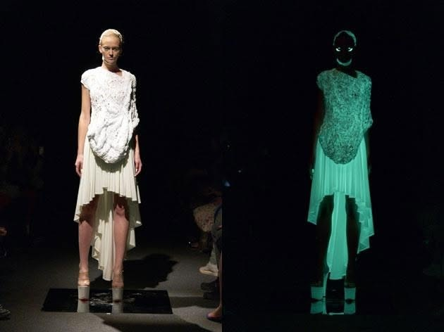
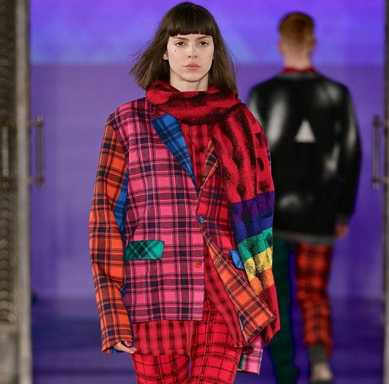
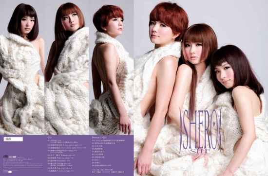
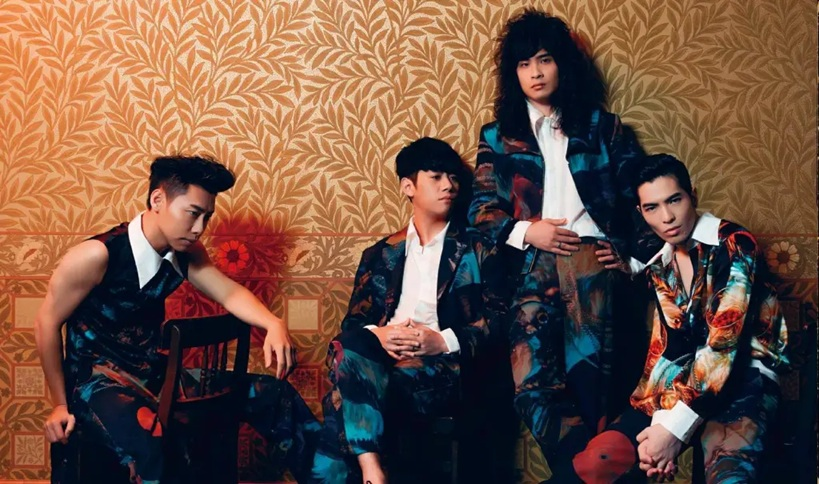
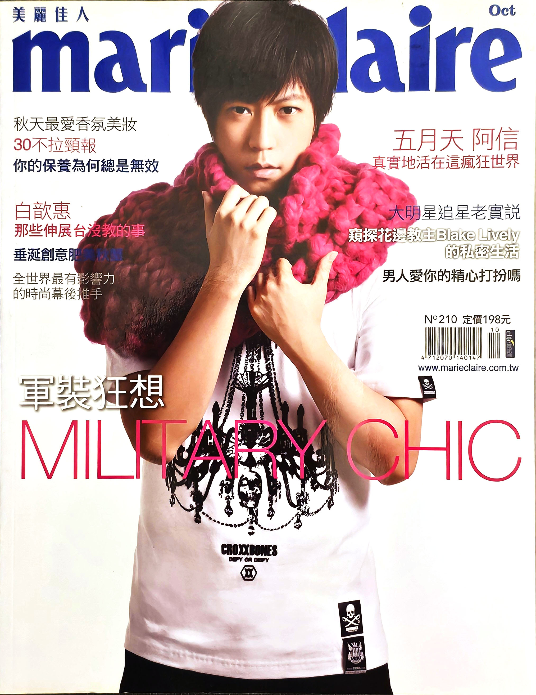
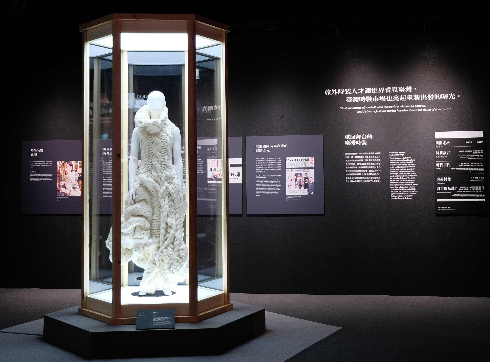
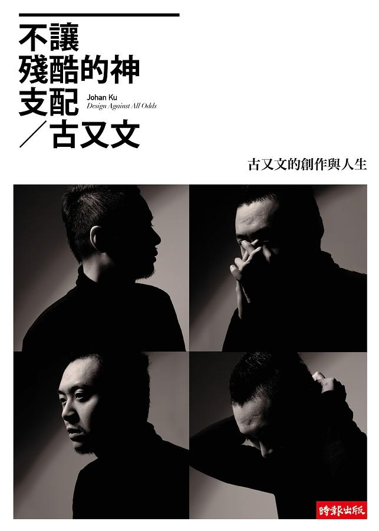

1979 — 2009
起步與獲獎
- 1979出生於台灣
- 2004創作《情緒雕塑》系列
- 2004台北服裝設計新人獎創意組第三名
- 2004北京師生盃中式服裝第一名
- 2005上海東華盃國際服裝大賽金獎
- 2005碩士論文《柔軟雕塑概念應用於服裝創作之研究》
- 2009紐約 Gen Art 前衛時裝設計獎
時裝設計師 ／ 時尚產業分析師 ／ 內容創作者
20 年時裝設計與國際時裝週實務，工作橫跨歐美與亞洲，讓我習慣跳脫單一視角， 從設計、商業策略、財報數字到品牌定位，用宏觀的角度分析迷人又複雜的時尚產業。
About
以立體針織雕塑與前衛材質語彙聞名國際的時裝設計師，現在也用設計師的工藝洞察，解析全球時尚產業。
以獨特立體針織雕塑與前衛材質語彙聞名國際的時裝設計師 Johan Ku 古又文，2009 年榮獲紐約 Gen Art 前衛時裝大獎，其創立的品牌 Johan Ku Gold Label 長期活躍於國際舞台，多次登上英國時裝協會（BFC）倫敦時裝週官方日程發表。
在累積超過二十年的服裝設計實務、品牌經營與國際參展經驗後，將專業視角延伸至全球時尚產業評論。透過 YouTube 頻道「Johan Ku 古又文」及深度專欄，結合設計師的工藝洞察、品牌經營實戰以及全球精品集團（如 LVMH、Kering、Hermès 等）的營運策略，為華語受眾帶來兼具美學底蘊與商業邏輯的深度時裝解析。
專業時裝設計、高級訂製與國際品牌營運實務經驗
以《情緒雕塑》（Emotional Sculpture）榮獲紐約 Gen Art 前衛時裝大獎（Avant-Garde Prize）
Johan Ku Gold Label 多次名列 BFC 倫敦時裝週與東京時裝週官方日程
YouTube 瀏覽人次迄今超過 550 萬，Facebook、Instagram、TikTok 全平台瀏覽人次超過 1000 萬
Timeline
從研究所時期的《情緒雕塑》，到東京時裝週連續八年、再到倫敦時裝週官方日程，三個階段看完二十年。
1979 — 2009
2010 — 2022
2024 — 2026
Press
從紐約獲獎到倫敦時裝週，國際與台灣媒體怎麼寫這些作品。剪報點一下可以放大看，文字報導都附上原始連結。
WWD美國
2014
於東京時裝週發表的 2015 春夏系列，登上美國版《WWD》紙本封面。WWD 官網另設有專屬設計師頁面，多季秀評收錄其中。
WWD 設計師頁Vogue美國
Vogue Runway
於 Vogue Runway 設有專屬設計師頁面，歷季作品收錄在這套國際秀場資料庫中，與各大時裝週品牌並列。
Vogue 設計師頁Daily Mail英國
2011
以標題「Japan Fashion Week: Johan Ku’s show glows in the dark」報導《The Two Face》夜光針織系列。同季獲《WWD JAPAN》選為當屆東京時裝週最好的七場秀之一。
Daily Mail 報導存檔版遠見雜誌台灣
2010
八月號封面故事「新台灣之光 100」收錄專文〈古又文 窮人家裡出狀元設計師〉，記錄獲獎後「瞬間成為台灣家喻戶曉的知名人物」。
遠見雜誌報導天下雜誌台灣
2015
第 584 期專訪〈時尚，鬥智鬥藝的心理遊戲〉。英文版寫道：在紐約出道、於倫敦求學，最後選擇從亞洲建立自己的品牌。
天下雜誌英文版GQ Taiwan台灣
2017
報導其與輔大共同創立 FJU Talents、擔任藝術總監，帶新銳設計師登上倫敦時裝週發表，並引述其觀點：台灣不缺優秀的服裝設計人才，缺的是與國際產業接軌的實戰訓練與機會。
GQ Taiwan 報導其他報導 中央社 · 自由時報 · 中國時報 · 公視新聞網 · 蘋果日報存檔版 · 康健雜誌 · BeautiMode · Vogue Taiwan · marie claire · ETtoday · OKAPI 閱讀生活誌 · Tatler Asia · NOT JUST A LABEL · TokyoFashion.com · Style Wylde
Watch
在時尚產業從業超過二十年，工作橫跨歐美與亞洲，讓我習慣跳脫單一視角，從設計、商業策略、財報數字到品牌定位，用宏觀的角度分析迷人又複雜的時尚產業。
熱門影片
Selected Work
超過 20 年服裝經驗中，足跡橫跨歐美日，讓我習慣用全球時尚產業內部的視角，思考時尚這門美麗又複雜的產業。

The Two Faces · 東京時裝週
同一件針織禮服，左邊是展場燈光下的樣子，右邊是燈暗之後。以電影《Enter the Void》為靈感的這個系列於 2011 年東京時裝週發表，夜光紗線把立體結構重新描了一次，一件衣服因此有了兩張臉，並獲《WWD JAPAN》選為當屆最好的七場秀之一。品牌自 2011 年起連續八年在東京時裝週發表作品。

以整條羊毛盤繞成型的粗針織，把服裝推向雕塑的體積。這個系列拿下紐約 Gen Art 前衛時裝大獎（Avant-Garde Prize），也成了往後所有作品的起點。

2019 年以《Sean》系列登上倫敦時裝週官方日程，並成為倫敦時裝協會正式會員迄今。系列以法國電影《120 BPM》為靈感，用三角形與彩虹為台灣婚姻平權法案提前慶祝。

Gen Art 獲獎後接到的第一個台灣藝人合作案。為《SHERO》前衛時尚版封面手工編織的三件立體毛線服，耗時兩個月、一針一線完成，三件加起來約 25 公斤。

蕭敬騰領軍的樂團穿上 2017 秋冬系列《Slade》。這一季的靈感來自電影《絲絨金礦》——David Bowie 與 Iggy Pop 那段華麗搖滾的年代，濃彩印花套裝正好接上樂團翻唱西洋與華語經典金曲的企劃。

美麗佳人第 210 期封面「阿信 真實地活在這瘋狂世界」。桃紅與酒紅雙色粗針織繞上肩頸，一件單品就撐起整個版面的重量，白 T 恤留白，讓針織成為畫面唯一的主角。

策展人盧淑芬梳理台灣半世紀時裝史、集結四十多位設計師的主題展。Johan Ku 古又文的 Gen Art 得獎作品《情緒雕塑》立體編織長禮服放在獨立展櫃中，被視為「走向世界的發光時代（2009–2017）」階段的關鍵起點。
Book
2010 年出版的自傳，寫的是得獎之前那段路。全書可以直接在這個網站上讀。

2010 · 時報出版
古又文的創作與人生 ／ Design Against All Odds
從家扶孩子到站上國際舞台的設計師，這本自傳記錄了得獎之前的成長、求學與創作過程。 出版當年獲得博客來非文學類年度新秀作家獎。
「我是使盡了吃奶的力氣才走到今天，很多人都會談自己的夢想，但你真的為自己的夢想使盡全力了嗎？」
— 古又文，OKAPI 閱讀生活誌專訪
「神要我們在殘酷的命運裡面赤身裸體。而古又文不從。我相信讀完這本書的你，也會不從。」
— 五月天 阿信，推薦序〈叛逆神的孩子〉
推薦序
Services
四個核心領域，從產業分析、設計訂製到演講與品牌顧問。想談合作，直接寄信給我。
Strategic Analysis
Fashion Design
Speaking & Writing
Brand Advisory
Contact
商業合作、演講邀約、專欄與訂製需求，寄信到下面的信箱。內容更新則在各個平台。